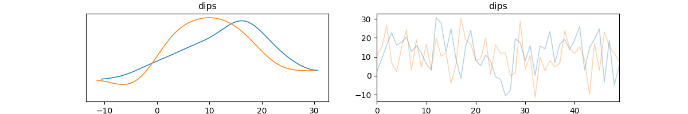
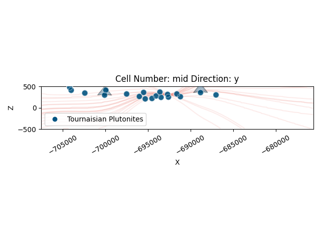

Note
Go to the end to download the full example code.
Error Propagation for Dip Angles¶
This example demonstrates uncertainty quantification by varying dip angles. We add uncertainty to orientation dips and propagate it through the geological model.
Import Libraries¶
import numpy as np
import gempy as gp
import gempy_viewer as gpv
import gempy_probability as gpp
import torch
import pyro
import pyro.distributions as dist
from pyro.distributions import Distribution
import arviz as az
from gempy_engine.core.backend_tensor import BackendTensor
from gempy_engine.core.data.interpolation_input import InterpolationInput
from gempy_probability.modules.plot.plot_gempy import plot_gempy
# Set random seeds for reproducibility
seed = 4003
pyro.set_rng_seed(seed)
torch.manual_seed(seed)
np.random.seed(1234)
Import paths and helper functions
from mineye.config import paths
from mineye.GeoModel.model_one.probabilistic_model import create_orientation_modifier
Define Model Extent and Resolution¶
min_x = -707521
max_x = -675558
min_y = 4526832
max_y = 4551949
max_z = 505
model_depth = -500
extent = [min_x, max_x, min_y, max_y, model_depth, max_z]
# Model resolution: use octree with refinement level 5
resolution = None
refinement = 5
Get Data Paths¶
mod_or_path = paths.get_orientations_path()
mod_pts_path = paths.get_points_path()
print(f"Orientations: {mod_or_path}")
print(f"Points: {mod_pts_path}")
Orientations: /home/leguark/Projects/gempy_project/Mineye-Terranigma/examples/Data/Model_Input_Data/Simple-Models/orientations_mod.csv
Points: /home/leguark/Projects/gempy_project/Mineye-Terranigma/examples/Data/Model_Input_Data/Simple-Models/points_mod.csv
Create GemPy Geological Model¶
geo_model = gp.create_geomodel(
project_name='dip_error_propagation',
extent=extent,
refinement=refinement,
resolution=resolution,
importer_helper=gp.data.ImporterHelper(
path_to_orientations=mod_or_path,
path_to_surface_points=mod_pts_path,
)
)
Map Geological Units¶
gp.map_stack_to_surfaces(
gempy_model=geo_model,
mapping_object={
"Tournaisian_Plutonites": ["Tournaisian Plutonites"],
}
)
Switch to PyTorch Backend¶
BackendTensor.change_backend_gempy(engine_backend=gp.data.AvailableBackends.PYTORCH)
print("✓ Switched to PyTorch backend")
Setting Backend To: AvailableBackends.PYTORCH
✓ Switched to PyTorch backend
Define Prior Distribution for Dips¶
Prior Predictive Sampling vs. Posterior Sampling
Prior Predictive Sampling: Generating data from the model using parameters drawn from the prior distribution. It answers: “What kind of models/data do our initial beliefs produce?” It’s a way to check if the model and priors are reasonable before considering observations.
Posterior Sampling: Generating parameters that are consistent with both our initial beliefs (priors) AND the observed data. It answers: “What parameters are most likely given the data we’ve seen?”
In this example, we focus on Prior Predictive Sampling to see how uncertainty in orientation dip angles propagates to the final structural geometry.
We’ll add uncertainty to all orientation dip angles.
from mineye.config.example_parameters import TharsisModelConfig
FORMATION_COLORS = TharsisModelConfig.TharsisDataProcessingConfig.FORMATION_COLORS
n_orientations = geo_model.orientations_copy.xyz.shape[0]
print(f"Number of orientations: {n_orientations}")
# Set prior: mean dip of 10° with standard deviation of 10°
mean_orientations = torch.ones(n_orientations) * 10.0
std_orientations = 10.0
model_priors = {
r'dips': dist.Normal(
loc=mean_orientations,
scale=torch.tensor(std_orientations, dtype=torch.float64),
validate_args=True
)
}
print(f"\nPrior distribution:")
print(f" Mean dip: {mean_orientations[0]:.1f}°")
print(f" Std: {std_orientations:.1f}°")
Number of orientations: 2
Prior distribution:
Mean dip: 10.0°
Std: 10.0°
Create Probabilistic Model¶
prob_model: gpp.GemPyPyroModel = gpp.make_gempy_pyro_model(
priors=model_priors,
set_interp_input_fn=create_orientation_modifier(key=r'dips'),
likelihood_fn=None,
obs_name=None
)
print("✓ Probabilistic model created")
Setting Backend To: AvailableBackends.PYTORCH
✓ Probabilistic model created
Run Prior Predictive Sampling¶
n_samples = 50
print(f"\nRunning {n_samples} prior predictive samples...")
prior_inference_data: az.InferenceData = gpp.run_predictive(
prob_model=prob_model,
geo_model=geo_model,
y_obs_list=[],
n_samples=n_samples,
plot_trace=True
)
print("✓ Prior predictive sampling complete")

Running 50 prior predictive samples...
/home/leguark/.venv/2025/lib/python3.13/site-packages/torch/utils/_device.py:116: UserWarning: To copy construct from a tensor, it is recommended to use sourceTensor.detach().clone() or sourceTensor.detach().clone().requires_grad_(True), rather than torch.tensor(sourceTensor).
return func(*args, **kwargs)
✓ Prior predictive sampling complete
Visualize Uncertainty¶
def update_model_for_plotting(geo_model: gp.data.GeoModel, sample_value: float, sample_idx: int):
"""Update model with a sampled dip value."""
gp.modify_orientations(
geo_model=geo_model,
dip=sample_value,
)
# Create base plot
p2d = gpv.plot_2d(
model=geo_model,
show_topography=False,
legend=False,
show_lith=False,
show_data=False,
show=False,
ve=5
)
# Overlay sampled models
plot_gempy(
geo_model=geo_model,
n_samples=20,
samples=(prior_inference_data.prior[r'dips'].values[0, :]),
update_model_fn=update_model_for_plotting,
gempy_plot=p2d,
contour_colors=[FORMATION_COLORS['Tournaisian Plutonites']]
)
# sphinx_gallery_thumbnail_number = 2
print("✓ Visualization complete")

Setting Backend To: AvailableBackends.PYTORCH
/home/leguark/.venv/2025/lib/python3.13/site-packages/torch/utils/_device.py:116: UserWarning: To copy construct from a tensor, it is recommended to use sourceTensor.detach().clone() or sourceTensor.detach().clone().requires_grad_(True), rather than torch.tensor(sourceTensor).
return func(*args, **kwargs)
/home/leguark/Projects/gempy_project/gempy_viewer/gempy_viewer/modules/plot_2d/drawer_contours_2d.py:38: UserWarning: The following kwargs were not used by contour: 'linewidth', 'contour_colors'
contour_set = ax.contour(
Setting Backend To: AvailableBackends.PYTORCH
Setting Backend To: AvailableBackends.PYTORCH
Setting Backend To: AvailableBackends.PYTORCH
Setting Backend To: AvailableBackends.PYTORCH
Setting Backend To: AvailableBackends.PYTORCH
Setting Backend To: AvailableBackends.PYTORCH
Setting Backend To: AvailableBackends.PYTORCH
Setting Backend To: AvailableBackends.PYTORCH
Setting Backend To: AvailableBackends.PYTORCH
Setting Backend To: AvailableBackends.PYTORCH
Setting Backend To: AvailableBackends.PYTORCH
Setting Backend To: AvailableBackends.PYTORCH
Setting Backend To: AvailableBackends.PYTORCH
Setting Backend To: AvailableBackends.PYTORCH
Setting Backend To: AvailableBackends.PYTORCH
Setting Backend To: AvailableBackends.PYTORCH
Setting Backend To: AvailableBackends.PYTORCH
Setting Backend To: AvailableBackends.PYTORCH
Setting Backend To: AvailableBackends.PYTORCH
✓ Visualization complete
Summary Statistics¶
samples = prior_inference_data.prior[r'dips'].values[0, :]
print(f"\nSampled dip angle statistics:")
print(f" Mean: {samples.mean():.2f}°")
print(f" Std: {samples.std():.2f}°")
print(f" Min: {samples.min():.2f}°")
print(f" Max: {samples.max():.2f}°")
print(f" Target mean: {mean_orientations[0]:.2f}°")
print(f" Target std: {std_orientations:.2f}°")
Sampled dip angle statistics:
Mean: 11.42°
Std: 9.28°
Min: -11.49°
Max: 30.64°
Target mean: 10.00°
Target std: 10.00°
Total running time of the script: (4 minutes 19.423 seconds)